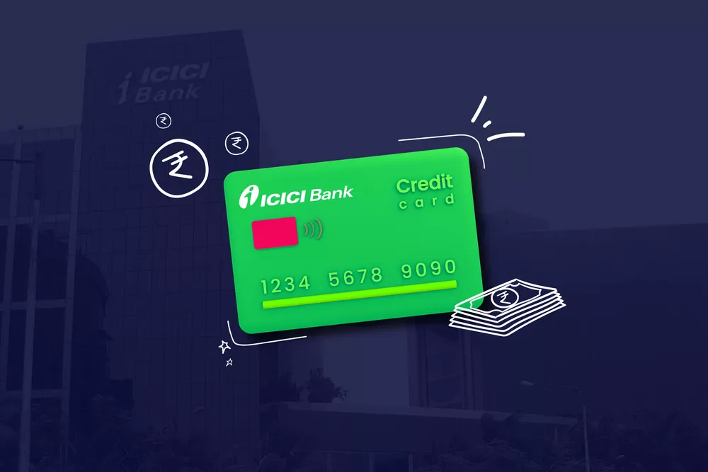

ICICI Bank offers a broad range of credit cards that cater to individuals with different credit
histories. Credit cards are classified under various categories, including travel, shopping,
entertainment, rewards, and more, providing customers with ample options based on their requirements.
However, with so many available options, selecting the most suitable credit card can be challenging. We
have carefully selected the best ICICI credit cards to simplify this process.
1. The Amazon Pay ICICI Credit Card
The Amazon Pay ICICI Credit Card is a co-branded credit card that provides benefits for online shopping.
This credit card is best suited for individuals who frequently shop on Amazon. The card provides up to
5% savings for Prime members. However, non-Prime members can only avail of 3% cashback. Therefore, it
makes sense to get this card only if an individual primarily use Amazon for online shopping needs. This
card is tailored to provide discounts on purchases made on Amazon. However, the maximum benefits from
this credit card are only available to Amazon Prime members.
Here are some of the key features of this card:
- No joining fee or annual/renewal fee.
- Prime members get 5% cashback on their Amazon spends.
- Non-Prime members get 3% cashback on their Amazon spends.
- 2% cashback on payments made via Amazon Pay to over 100 partners.
- 1% cashback on all other expenses on travel, dining, shopping, and more.
- Participating restaurants under the ICICI Culinary Treats Program offer a minimum discount of 15% on
dining bills.
- 1% fuel surcharge waiver across all Indian petrol pumps.
2. The ICICI Bank Coral Credit Card
The ICICI Bank Coral Credit Card suits those who frequently shop and want to earn transaction rewards. It
is a point-based credit card that allows to earn reward points which can be redeemed for various
exciting rewards through the ICICI Bank Rewards program. The card is usually offered to the bank's loyal
customers without any joining or annual fees, making it a secure option. ICICI Bank Rewards is India's
largest reward program and offers a range of rewards for everyday spending. Key features of the ICICI
Bank Coral Credit Card are:
- Earn 2 Reward Points for every Rs.100 spent and 1 Reward Point for every Rs.100 spent on utilities
and insurance.
- Milestone Rewards program: earn 2000 Reward Points on spending Rs. 2 Lakhs and 1000 Reward Points
after that in an anniversary year (max 10,000 points/yr).
- No Reward Points on fuel purchases.
- 25% discount (up to Rs.100) on two BookMyShow movie tickets twice a month and Inox website/app/box
office transactions.
- Culinary Treats Programme: exclusive offers on dining and discounts on food orders from partner
restaurants.
- Exclusive offers from Visa and Mastercard for luxury hotels, restaurants, lifestyle stores, and
spas.
- One complimentary access to selected airports and railway lounges in India per quarter.
- Security chip-enabled.
- 1% fuel surcharge waiver on up to Rs. 4,000 spent at HPCL pumps.
3. ICICI Bank Sapphiro Credit Card
ICICI Bank Sapphiro Credit Card is a premium credit card that caters to frequent travelers who seek
exclusive benefits. The card offers an array of perks for both domestic and international travelers,
including lounge access, gold privileges, and Dreamfolks membership. The joining fee for the card is Rs.
6,500, and the annual/renewal fee is Rs. 3,500, which is waived off upon spending more than Rs. 6 lakh
in a year.
The ICICI Bank Sapphiro Credit Card comes with a host of features, including:
- Get welcome vouchers for shopping and travel worth over Rs. 9,000.
- Earn up to 20,000 ICICI reward points annually.
- Earn 4 points on international spending, 2 on domestic spending, and 1 on utility and insurance
spending for every Rs. 100 spent.
- Enjoy a complimentary DreamFolks Program membership to access international airport lounges and
domestic airport spas.
- Avail up to 4 complimentary domestic airport lounge visits quarterly on spending Rs. 5,000 or more.
- Get up to 4 complimentary rounds of golf per month based on eligible card spending.
- Book one movie or event ticket on BookMyShow and get up to Rs. 500 off on the second ticket.
4. The MakeMyTrip ICICI Bank Platinum Credit Card
The MakeMyTrip ICICI Bank Platinum Credit Card is a travel credit card offered in collaboration with
MakeMyTrip. Cardholders only need to pay the joining fee for the first year with no annual fee. This
card is ideal for frequent travelers. It offers cashback on spends credited to the cardholder's "My
Cash" account, valid for 90 days. It can only be used for spending via this credit card.
Here are some of the features of the MakeMyTrip ICICI Bank Platinum Credit Card:
- Get one complimentary airport lounge access per quarter by spending Rs. 5,000 per calendar quarter.
- Avail of one complimentary railway lounge access per quarter in participating lounges in India.
- Enjoy a 25% discount, up to Rs.100, on purchasing at least two tickets per transaction twice a month
on BookMyShow and Inox.
- Benefit from exclusive dining offers through ICICI Bank Culinary Treats Programme.
- The credit card comes with a security chip.
- Avail a 1% fuel surcharge on fuel transactions up to Rs. 4,000 monthly.
- Get Rs. 500 My Cash and a MakeMyTrip holiday voucher worth Rs. 3,000 on joining.
- Avail of MMTBLACK Membership and access exclusive offers and My Cash for future bookings on
MakeMyTrip.
- Spend Rs. 2.5 lakh through the card and earn Rs. 1,000 My Cash each anniversary year.
- Spend Rs. 50,000 on flights, hotels, or holiday bookings on MakeMyTrip and earn Rs.1,000 My Cash
each anniversary year.
5. The ICICI Bank Rubyx Credit Card
The ICICI Bank Rubyx Credit Card is India's first dual platinum credit card with three variants - Visa,
MasterCard, and American Express. But currently, only the Rubyx Visa Credit Card is being issued. The
card has a joining fee of Rs. 3,000 and offers travel and shopping vouchers worth Rs. 5,000 as a welcome
gift. Customers earn ICICI Reward Points on domestic and international spending and can redeem them for
cash or gifts.
Some key features of the ICICI Bank Rubyx Credit Card include:
- Earn 2 Reward Points on domestic spends of Rs.100 and 4 Reward Points on international spending of
Rs. 100
- Get 1 Reward Point on every Rs.100 spent on utilities and insurance.
- Earn up to 3,000 Reward Points on spending Rs. 3,00,000 and 1,500 Reward Points on crossing Rs.
1,00,000 spends in an anniversary year under the new Milestone Rewards program.
- Receive up to 15,000 Reward Points every anniversary year.
- Get travel and shopping vouchers worth Rs. 5,000+ as a welcome benefit.
- Enjoy a 25% discount, up to Rs.150, on at least two movie tickets per transaction on BookMyShow and
Inox twice a month.
- Avail discount offers on dining via the ICICI Bank Culinary Treats Program.
- Get two complimentary domestic airport lounge access on the Visa variant per quarter by spending a
minimum of Rs. 5,000 in the previous quarter.
- Enjoy two free visits to railway lounges every quarter.
- Play up to two rounds of golf for free every month at select golf courses when you make eligible
purchases with your credit card.
- Receive exclusive insurance benefits, including an Rs.1 crore air accident cover and lost card
liability protection of up to Rs. 50,000.
- Avail 24*7 concierge service i-Assist
- Get a 1% fuel surcharge waiver on fuel transactions at any fuel station.
- Avail of spends-based renewal fee waiver by making expenditures of Rs. 3 lakh in the previous year.
Conclusion
ICICI Bank provides various credit cards to meet individual needs. Eligibility for each card depends on
spending behaviour and repayment capacity. ICICI Bank has credit cards suitable for different categories
like shopping or fuel. However, choosing the right credit card can be challenging, requiring careful
evaluation of limits and a thorough reading of all terms and conditions before applying.